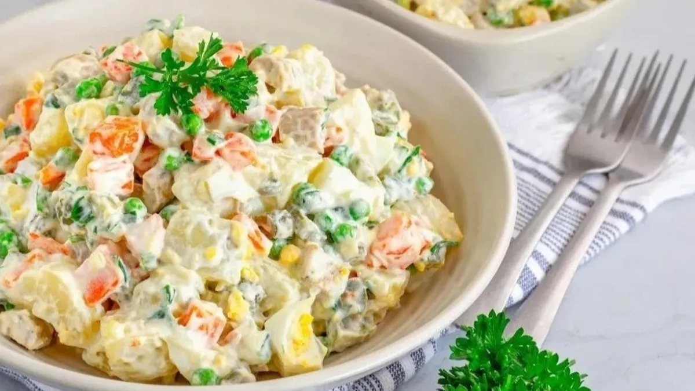

Ensalada Rusa
Acompañamiento clásico de las fiestas. Una mezcla cremosa y colorida de papas, zanahorias y arvejas con mayonesa.
Autor
Pedro Pascal

Pedro Pascal es un chef apasionado por la cocina creativa y la fusión de sabores. Con años de experiencia en reconocidos restaurantes internacionales, ha logrado combinar técnicas tradicionales con innovaciones modernas, creando platos que no solo sorprenden al paladar, sino que también cuentan historias.
Ingredientes
Para la Ensalada
- 3 papas medianas
- 2 zanahorias
- 1 taza de arvejas
- 1 taza de mayonesa
- Sal y limón
Receta
- Pelar las papas y zanahorias y cortarlas en cubos pequeños.
- Hervir las papas, zanahorias y arvejas por separado hasta que estén tiernas pero firmes.
- Dejar enfriar completamente.
- Mezclar todo en un bol grande y agregar mayonesa al gusto.
- Rectificar sal y agregar unas gotas de jugo de limón.
- Refrigerar por una hora antes de servir.
Califica esta receta y deja tu opinión
Selecciona una calificación